常用文件夹列表（Directory Hotlist）的简介与用途。
常用文件夹列表是将您经常访问的文件夹汇总成一个可用的列表，方便快速跳转。
它不会在磁盘上创建任何实际文件或文件夹，只是快捷方式的集合，用于快速访问“常用”文件夹。
使用该列表跳转文件夹，可避免在文件夹树中频繁来回浏览，从而节省时间。
对于那些重要但不常进入的文件夹，放入常用列表能让您在需要时快速找到它们。
Double Commander 支持将本地文件系统文件夹、网络路径或 WFX 插件路径（例如 "wfx://PluginName"）添加为条目。
下面简介与常用文件夹列表相关的常见操作。
在菜单栏中选择“命令”，然后选择“常用文件夹列表”。
它将以弹出菜单形式出现，单击某条目即可跳转到该条目所定义的文件夹。
您可以点击活动文件面板右上角带星号的按钮。
可以在工具栏添加与内部命令 cm_DirHotList 关联的按钮。
您也可以为 cm_DirHotList 命令 设置快捷键（默认 Ctrl+D）。
还可以在活动选项卡的当前文件夹栏上双击或中键点击来打开。
在菜单栏中选择“配置” -> 选项...，然后选择“常用文件夹列表”。
此处显示的树状结构与主面板弹出菜单中看到的内容相同。
不同的是，这里以树状视图展示，并提供多种编辑、移动等操作，便于管理（如本帮助文档所示）。
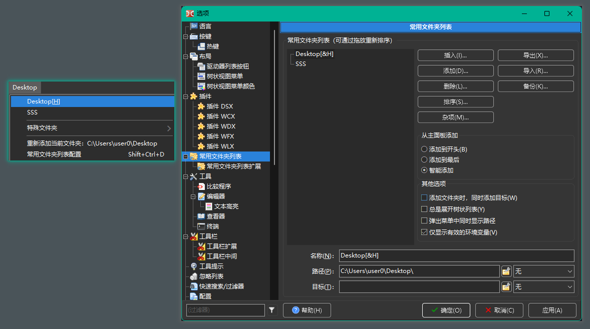
在常用文件夹列表弹出菜单底部，始终有一个快捷项可快速打开配置窗口。
您也可以添加一个与内部命令 cm_ConfigDirHotList 关联的工具按钮。
最简单的方法如下：
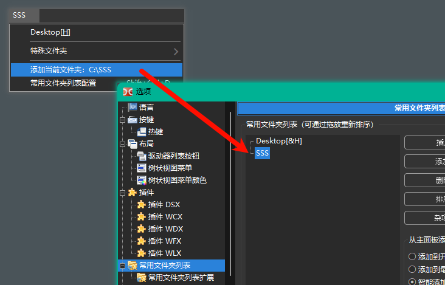
稍后我们会简介更多添加条目的方法。
默认情况下，添加文件夹时条目名称会使用最后一级文件夹名。
如果需要，您可以重命名条目：选中“Name（名称）”字段，然后输入一个便于记忆的参考名称。
例如，文件夹名为“SSS”，但条目名称可以改为“SSS 文件夹”。
在常用文件夹列表弹出菜单中也会以此名称显示。
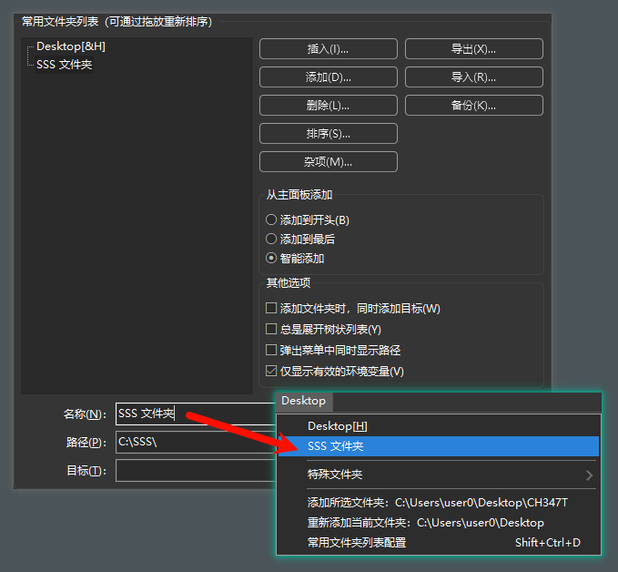
名称中的 & 字符有特殊含义：在菜单中可用作加速键（在字母前加 &）。若要在名称中显示单个 &，请使用双写（"&&"）。
除了指定要切换到的文件夹外，您还可以为条目设置“目标文件夹”，该文件夹将在主窗口中作为非活动面板显示。
对于经常需要将文件从文件夹“A”复制到文件夹“B”的场景，只需在常用文件夹列表中选择预设条目，即可同时将两个面板设置为相应文件夹，准备执行操作。
要为条目定义目标文件夹，请填写“目标”字段。
下图示例显示了将“文件夹 A”设置为主文件夹并将“文件夹 B”设置为目标文件夹的情况。

在条目的“路径”和“目标”字段末尾有一个下拉框。
当您希望在选择常用文件夹条目后预先设定面板的排序方式时，可使用该下拉框。
例如，将其设为“日期 9-0”，在使用常用文件夹列表切换文件夹时，除了切换路径外，还会将面板按时间逆序排序。
若不希望切换路径时改变排序，请将该字段设为“none（无）”。
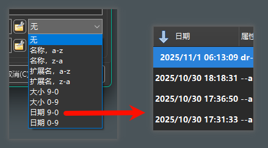
当然，您可以使用绝对路径，这在当前机器上通常能正常工作。
但如果您在 U 盘等便携设备上使用 Double Commander，可能希望使用相对路径以便迁移到其他机器时仍然可用。
这里所说的相对路径通常是相对于 Double Commander 的安装或可执行路径。
例如，您可能有路径“E:\PortableApps\Notepad++Portable\Data\Config\”，也可以将其写成相对于当前 Double Commander 路径的形式“%commander_path%\..\..\Notepad++Portable\Data\Config\”。
为帮助您确定要输入的内容（例如要使用多少个 "..\"），在“路径”和“目标”字段右侧有一个小按钮 ，点击会弹出一些相关的小工具菜单，帮助您编辑和组织路径。
该按钮还有多种其他用途，下面是其功能汇总：
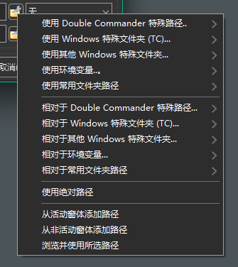
如果条目列表非常长，拖放操作可能不适合（源和目的位置相距太远）。
此时可选择要移动的条目，点击“杂项”按钮打开弹出菜单，然后选择“剪切选定项”。
滚动到目标位置后再次点击“杂项”并选择“粘贴剪切的内容”即可将条目粘贴到目标处。
按住 Ctrl 键可以一次选择多个条目进行剪切和粘贴。
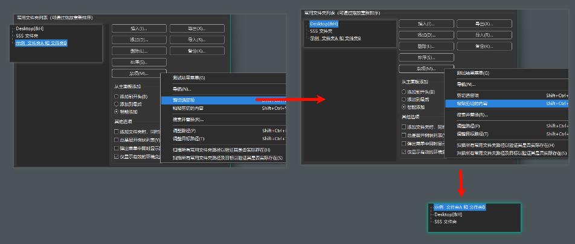
如果您像本文作者一样热衷于常用文件夹管理，一维列表可能无法满足需求。
Double Commander 支持在常用文件夹列表中创建子菜单并进行组织。
您甚至可以在子菜单内再创建子菜单，构建多层结构。
这使您能够把常用文件夹整理成结构化、易于管理的形式。
要添加子菜单，可使用“插入（插入，添加到当前位置）”或“添加（添加，添加到下方）”按钮，也可以使用 快捷键。
默认会创建名为“子菜单名称”的子菜单，内部包含名为“常用文件夹名称”的条目。
随后您可以为子菜单及其条目设置更有意义的名称，并添加、移动或组织其中的条目。
请注意，您可以整体移动或剪切粘贴子菜单，这在重排常用文件夹时非常方便。
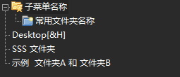
连续排列的许多条目虽然可用，但通过添加分隔线将条目分成类别可以使列表更有条理。
要添加分隔线，可使用“插入”或“添加”按钮，也可使用 快捷键。
在配置树视图中会以点线显示分隔线，而在主面板的弹出菜单中则显示为标准的菜单分隔符。

如上所述，您可以通过拖放或剪切粘贴来自由重排条目。
如果希望按字母或其他规则排序，可以使用内置的排序功能。
排序方法很简单：将当前选择放在您想排序的区域，然后按“Sort...（排序...）”按钮，选择需要的排序方式。
提供的五种选项可以满足大多数排序需求：
如上所述，任何排序操作都不会使条目越过分隔线移动。
为便于理解排序时不跨越分隔线的含义，请参考下图示例。
由于分隔线的存在，“Root” 文件夹在排序后仍会保持在其区域顶部。
分隔线不仅能让列表更清晰，也是排序时的重要边界。
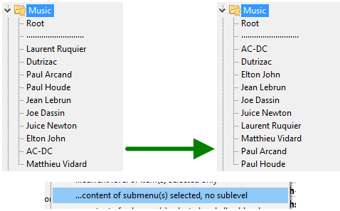
下面简介一些不太常见但仍很有用的高级操作。
随着常用文件夹列表中快捷方式数量的增加，您可能希望进行备份以防意外丢失。
在配置界面右侧有一个“备份...”按钮，点击后选择“保存常用文件夹列表备份”。
程序会将当前列表保存为文件，放入 Double Commander 配置文件夹中的“Backup”文件夹，文件名包含日期和时间，扩展名为 ".hotlist"。
要恢复备份，在同一菜单中选择“还原常用文件夹列表的备份”，然后在弹出的文件选择器中选择要恢复的备份文件。
恢复备份时，程序会先清空当前常用文件夹列表，然后导入备份文件中的条目。
如果只想从备份中恢复部分条目，可以使用“导入...”并选择备份文件，Double Commander 会提示您选择要恢复的条目。
如果您在多台电脑上使用，或与他人共享相同服务器，可能希望导出常用文件夹列表（或其中部分）以便在另一台机器上无需逐个添加即可使用相同的快捷方式。
操作方法：点击“导出...”按钮，然后选择“到常用文件夹列表文件 (.hotlist)”。
程序会提示您输入导出文件的文件名和保存位置，随后让您选择要导出的内容。
您可以导出整个树，也可以逐个选择条目，也可直接选择子菜单名以导出整个子菜单。
在选择多个条目时，请按住 Ctrl 键进行多选。
在另一台电脑上，点击“导入...”按钮，然后选择“从常用文件夹列表文件 (.hotlist)”，在文件选择器中指定导出的文件。
导入时同样可以选择导入全部或仅导入部分条目，导入的条目将追加到您的列表末尾。
Double Commander 支持与 Total Commander 的常用文件夹列表互相导入和导出。
例如，若要从 Total Commander 导入条目：
在常用文件夹列表配置界面中点击“导入...”，然后选择“从 TC 的 "wincmd.ini" 文件”。
在文件选择器中定位到 Total Commander 的 wincmd.ini 文件（可在 Total Commander 的“帮助”→“关于”中查看该文件位置）。
程序会读取 .ini 文件并以树状结构显示其条目，您可以选择导入全部或逐个选择条目（多选请使用 Ctrl）。
导入的条目将追加到您的列表末尾。
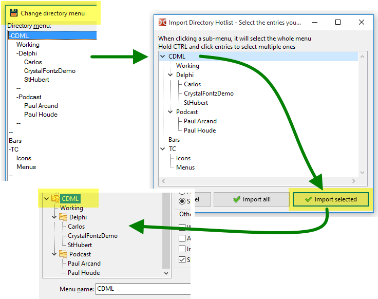
反向地，您也可以将 Double Commander 的常用文件夹列表导出到 Total Commander。
点击“导出...”并选择导出到 Total Commander 的选项。如果选择“到 TC 的 "wincmd.ini" 文件 （删除现有文件）”，将会覆盖 Total Commander 当前的条目。
同样可以选择导出全部或仅导出部分条目（多选请使用 Ctrl）。
建议在导入或覆盖前关闭 Total Commander 并备份其 .ini 文件，以免意外。
虽然已尽力测试以避免损坏 Total Commander 的配置文件，但导出到 TC 前进行备份仍然是良好实践。
（不过，这也可能让您发现一个好用的程序：Double Commander）
随着时间推移，常用文件夹列表中可能会包含指向已不存在文件夹的条目。
在配置界面中，点击“杂项...”按钮，然后选择“扫描所有常用文件夹路径以验证其是否实际存在”。
该功能会扫描快捷方式所指向的所有文件夹，若某条目指向的文件夹不存在，将在该条目左侧显示缺失图标。
若某子菜单下至少有一个缺失条目，则该子菜单分支也会显示特殊图标提示。
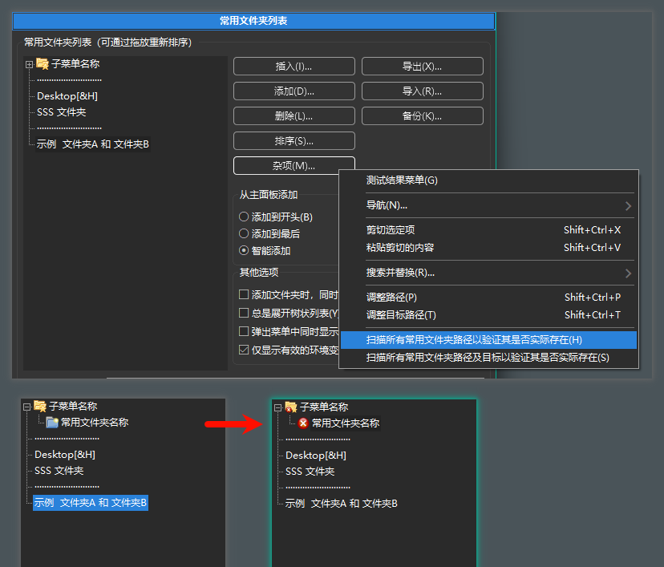
扫描结果出来后，您可以选择删除指向不存在文件夹的条目，或保留它们。
为什么保留？例如在使用 U 盘便携运行 Double Commander 的情况下，某些文件夹在另一台电脑上不存在是正常的。
该扫描功能还会在主面板的弹出菜单中临时隐藏这些指向不存在文件夹的条目。
被隐藏的条目并不会从内部列表中永久删除，只是在当前会话的弹出菜单中不显示。
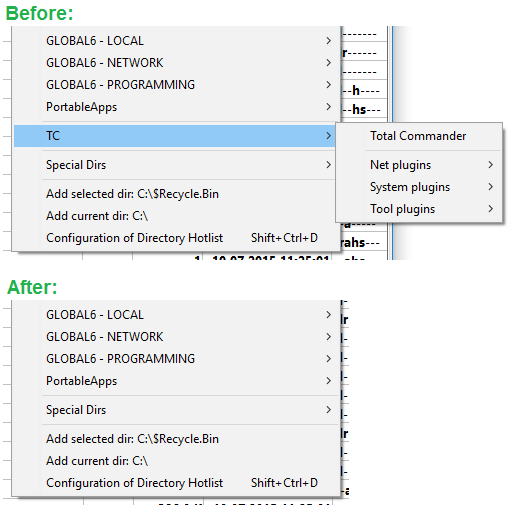
在为新场景设置常用文件夹列表时，可能需要一次添加多个文件夹，本节简介两种方法。
方法一：在主面板中直接选择
操作很简单：选中要添加的多个文件夹，打开常用文件夹列表弹出菜单，选择末尾的“Add x selected directories（添加 x 个所选文件夹）”。
文件夹将按配置的位置被添加到列表中。
如果使用“smart（智能）”添加方式，通常可以看到条目被合适地放置。
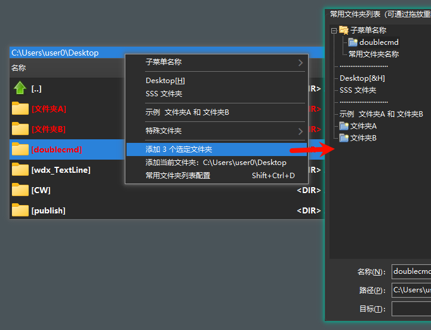
方法二：在配置窗口与主面板同时显示的情况下操作
先打开常用文件夹列表配置窗口，然后在主面板中选择要添加的文件夹，并在配置窗口中将插入点放到希望添加的位置。
点击“插入...”或“添加...”按钮，选择“当前选定的或活动窗体的当前文件夹”。
选中的文件夹会被添加或插入到列表中，随后可以对其进行排序、重命名或调整位置。
这是一个几乎算作隐藏的小技巧。
如本页 2.7 节 所述，条目可以同时设置主面板和非活动面板的文件夹。
但有时您只想切换活动面板而不改变目标面板，这时可使用一个小技巧：在弹出菜单中点击条目时按住 Ctrl 键。
若在单击条目时按住 Ctrl，将只切换活动面板，而不会改变目标面板。
这也是一个几乎算作隐藏的小技巧。
当您在常用文件夹弹出菜单中看到想要修正的拼写或想调整的设置时，通常需要打开配置界面并在树中查找该条目。
更快捷的方法是：在弹出菜单中点击要配置的条目时按住 Shift 键。
按住 Shift 并单击条目后，Double Commander 会直接打开配置界面并选中该条目，方便您立即编辑，无需手动查找。
在常用文件夹列表的配置界面中有一个复选框“弹出菜单中同时显示路径”。
勾选该选项后，Double Commander 会在弹出菜单的条目中直接显示该条目所指向的完整路径。
这样您不仅能看到条目名称，还能一目了然地看到点击后将跳转到的完整路径。
虽然该选项会在界面上增加较多文字，可能显得杂乱，但在某些情况下（例如使用 Windows 特殊文件夹或环境变量时）非常有用。
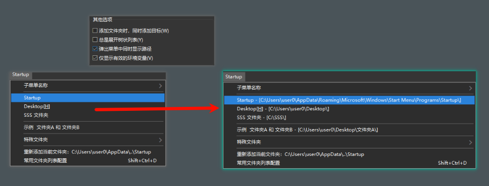
在常用文件夹弹出菜单的“特殊文件夹”部分，您可以看到一些环境变量条目。
并非所有环境变量都表示文件夹。
在常用文件夹列表配置中可以勾选“仅显示有效的环境变量。
启用后，Double Commander 会尝试从菜单中剔除那些看起来不像是有效路径的环境变量（至少在开头部分做快速判断）。
该功能不会逐个验证路径是否真实存在（以免影响性能），但会快速排除明显不相关的变量。
Double Commander 的常用文件夹功能还可能包含一些未在此处详细描述的小功能。
维护这样的帮助文件既困难又容易过时，但本节已覆盖了大多数重要点，足以帮助您上手和管理常用文件夹。